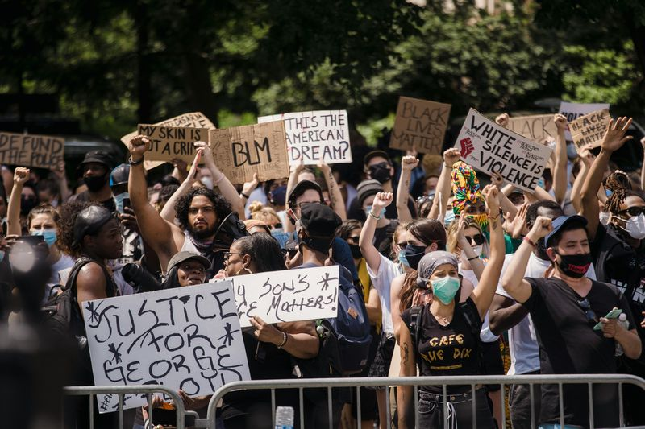
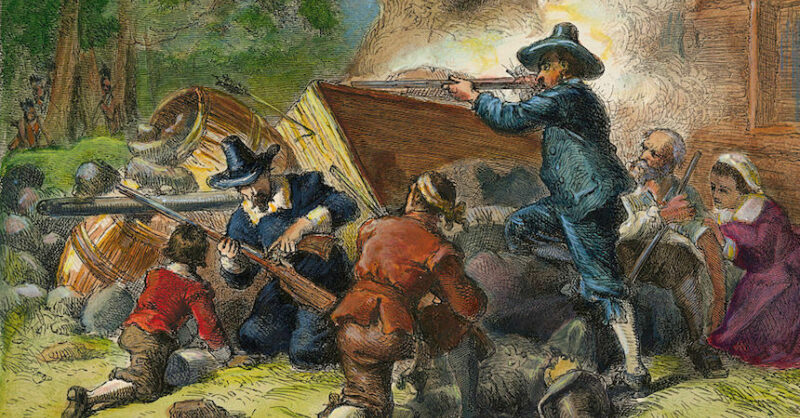
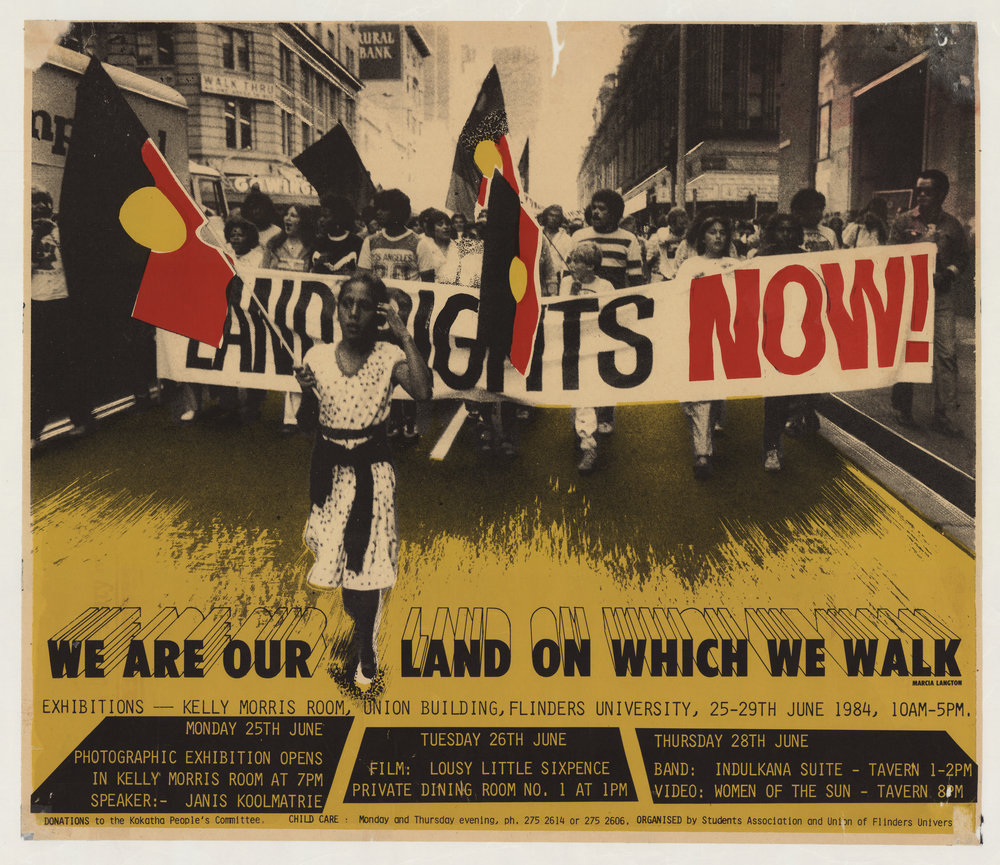
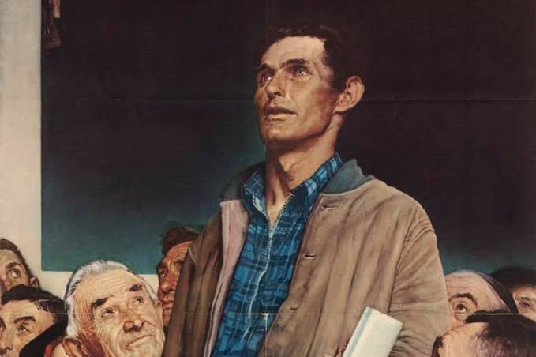

The K.K.K.Revolution Explore key works from the Katipunan era.  Art & Activism A deep dive into social realism and protest art.  Colonialism'sEnd Global parallels of anti-colonial art.  Labor &Land Art made in defense of workers and the earth.  PressFreedom Images that keep public truth visible.
Exhibit spotlight: Filtered by category: Clear filter × No works in this category yet. Show all works